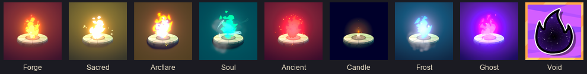
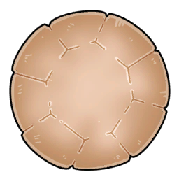
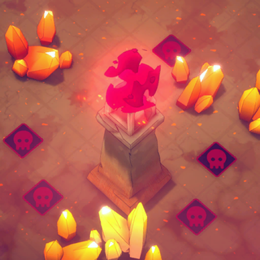

Nguồn lửa & loại lửa (Ember)
Nguồn lửa (Fire Source) là 'căn cứ' cần bảo vệ: 10 HP đầu run (GameplayData.maxHP), có thêm armor (Knight 3, Shield Gem) và extraShield; HP giữ nguyên giữa các stage, hồi bằng chest/campsite/altar/talent.
Mô tả
- Nguồn lửa (Fire Source) là 'căn cứ' cần bảo vệ: 10 HP đầu run (GameplayData.maxHP), có thêm armor (Knight 3, Shield Gem) và extraShield; HP giữ nguyên giữa các stage, hồi bằng chest/campsite/altar/talent. 8 loại lửa (eEmberType): Forge Fire (mặc định), Sacred, Arcflare, Soul, Ancient, Void, Candle, Frost — mỗi loại đổi luật cả run (mọi stage corrupted, sốc điện định kỳ, tăng ATK khi giết, seal tháp, portal, 5 HP + bóng tối, băng). Nguồn lửa tự tấn công khi học talent Ember Sparks.
- Vào stage: OnRequestFireSourceInit(isAnomalyLevel) đặt Obj_FireSource tại IPlayerStartPoint, RegisterToMapManager (quái tìm đường tới đây), energyLevel điều khiển ánh sáng/vision (fogOfWarVisionRadiusRange — Candle Flame/Darkness stage). Mỗi vòng OnRoundStart/OnRoundEnd chạy hiệu ứng theo ember: Ancient Flame seal (ABaseTower dormant + buff), Arcflare xả điện, Frost tăng tầm, Soul level (demonFlameLevel), Void portal card. HP: IngameData.HP khởi tạo từ GameplayData.curHP; quái tới đích → armor trước rồi HP; hết stage lưu lại curHP. Hồi: RequestAddHP (chest HP card weight 2, campsite 1/3/10 HP, altar Recover 3/Purify full/Enhance +5 max, talent Flame Renewal +1/stage, Sacrificial Pact +10 khi <5).
Sơ đồ
Hình minh hoạ



Lưu ý
Mở khóa & điểm vào
Forge Fire có sẵn. Sacred: clear Misty Forest Normal; Arcflare: Bone Desert Normal; Soul + Frost: Frost Ruins Normal; Ancient: Sealed Citadel Normal; Candle: Sealed Citadel Heroic; Void: (loc trống) — code IsEmberUnlocked case 5 kiểm tra StageRecord win. Ghost Flame: 'Graveyard' Normal (event).
Điểm vào:
- UI_SelectCharacterPopup (chọn ember cùng nhân vật; FlameColorData)
- RequestChangeEmberType / OnEmberTypeChanged
- UI_NewUnlockPopup.EmberUnlockData khi mở
Cách hoạt động
- Khởi tạo HP đầu run: maxHP = 10; extraShield = 0 → talent HP_INCREASE_LVL1 (9): +3/5/10 → Feri skill: +5 HP (BASIC_SKILL_1) → Candle Flame: 5 HP
- Quái chạm nguồn lửa: damage = monster attack (1 mặc định; override) × IngameData.CalculateMonsterDamageAfterMultiplier → armorDamage trước (Knight 3/stage, Shield Gem +3), rồi hpDamage → OnHpChanged/OnArmorChanged; Obj_FireSource VFX DamagePlayer_Large → GameplayData.damageTaken++ (perfect win nếu 0) (Quy tắc: Shard HP L2: +1 dmg; Vengeance Statue/Mystic Gauntlets (isHPRelated relic) phản ứng)
- Ember Sparks (nguồn lửa tấn công): FireSourceDealDamageToMonster theo MonsterManager.GetFiresourceTargetMonster(range) → Cấp 2/3 tăng tốc bắn +50 %/+100 % (param 0/50/100 %) → Soul Flame: giết đủ quái → level +1 ATK; mất level khi bị đánh → Frost Flame: sát thương băng + chill nhỏ, tầm tăng cuối vòng
- Ancient Flame seal: Tháp bị 'sealed' (dormant) tới 2 vòng: SetDormantRoundCount; mỗi OnRoundEnd +15 % crit, ×1.1 attack speed → Người chơi có thể gỡ seal bằng vàng (coinSpent_ancientFlameRemoveSeal, achievement ANCIENT_FLAME_NO_REMOVE_SEAL) → Cuối vòng lửa phun corrupted tile quanh (CR_CreateTiles) (Quy tắc: Loc ANCIENT_ABILITY: +15 % crit +10 % AS mỗi vòng, tối đa 2 vòng)
- Void Flame portal: Nhận 2 thẻ Void Portal (PlayerPortalBuff 3067, area 1.5, 2 lượt dùng) → đặt 2 cặp cổng → Quái qua cổng bị đánh dấu 10 s, coi như trong tầm lửa; đòn lửa ăn mòn → OnMonsterPassThroughPlayerPortalComplete; achievement PORTAL_X_TIMES
- Candle Flame / Darkness: fogOfWarVisionRadiusRange nhỏ; tháp chỉ bắn quái trong vision (MonsterManager.IsMonsterInVision, list_MonsterInDarkArea) → Xây tháp mở rộng tầm nhìn (IVisionObject, tháp lớn = nhìn xa); đặt phải NOT_IN_VISION check → Amulet of Light 4083 hỗ trợ (Quy tắc: Darkness stage chỉ Heroic (DoSpawnDarknessLevel: isDefeatedNormalModeBoss && difficulty==HEROIC))
Luồng chi tiết theo code
Vào stage: OnRequestFireSourceInit(isAnomalyLevel) đặt Obj_FireSource tại IPlayerStartPoint, RegisterToMapManager (quái tìm đường tới đây), energyLevel điều khiển ánh sáng/vision (fogOfWarVisionRadiusRange — Candle Flame/Darkness stage). Mỗi vòng OnRoundStart/OnRoundEnd chạy hiệu ứng theo ember: Ancient Flame seal (ABaseTower dormant + buff), Arcflare xả điện, Frost tăng tầm, Soul level (demonFlameLevel), Void portal card. HP: IngameData.HP khởi tạo từ GameplayData.curHP; quái tới đích → armor trước rồi HP; hết stage lưu lại curHP. Hồi: RequestAddHP (chest HP card weight 2, campsite 1/3/10 HP, altar Recover 3/Purify full/Enhance +5 max, talent Flame Renewal +1/stage, Sacrificial Pact +10 khi <5).
Số liệu chính
| Chỉ số | Giá trị | Nguồn |
|---|---|---|
| maxHP | 10 (Candle 5; Shard HP L3 3) | GameplayData.InitializeHP |
| TalentSettingData HP_INCREASE_LVL1 | +3/+5/+10 (cost 10/25/50) | TalentSettingData |
| Knight armor | 3 mỗi stage | MainGame.Start |
| Campsite recover items | Charge Gem Powder +1 HP, Cracked +3, Perfect +10, Energy Gem +5 max, Soul Gem +1 dmg lửa, Shield Gem +3 armor; giá ×1.35 với Shard HP L1 | UI_EmberRecover_Popup; loc CAMPSITE_RECOVER_ITEM_* |
| eEmberType | BASIC 0, HOLY 1, BLAZE 2, DEMON 3, ANCIENT 4, VOID 5, CANDLE 6, FROST 7 | enum |
| Arcflare | sốc ngẫu nhiên, stun 1–2 s, +20 % Charge | EmberType BLAZE_ABILITY |
Ghi chú thiết kế
- Lưu trữ: GameplayData.curHP/maxHP/extraShield/emberType/demonFlameLevel
- Lưu trữ: list_NotifiedUnlockedEmbers
Use case (6)
Bấm vào từng use case để mở. Mở/đóng tất cả
UC-01 Khởi tạo HP đầu run
Các bước- maxHP = 10; extraShield = 0
- talent HP_INCREASE_LVL1 (9): +3/5/10
- Feri skill: +5 HP (BASIC_SKILL_1)
- Candle Flame: 5 HP
- Shard HP L3: chỉ 3 HP
- curHP = maxHP
| Actor | System |
|---|---|
| Trigger | GameplayData.InitializeHP |
| Evidence | GameplayData.InitializeHP; TalentData.GetTalentParamInt(9); Perk_InfernoShard_HP |
UC-02 Quái chạm nguồn lửa
Các bước- damage = monster attack (1 mặc định; override) × IngameData.CalculateMonsterDamageAfterMultiplier
- armorDamage trước (Knight 3/stage, Shield Gem +3), rồi hpDamage
- OnHpChanged/OnArmorChanged; Obj_FireSource VFX DamagePlayer_Large
- GameplayData.damageTaken++ (perfect win nếu 0)
- HP ≤ 0 → OnPlayerDefeat
| Actor | System |
|---|---|
| Trigger | ReachEndOfPathProc |
| Quy tắc / số liệu | Shard HP L2: +1 dmg; Vengeance Statue/Mystic Gauntlets (isHPRelated relic) phản ứng |
| Evidence | IngameData.OnMonsterDealDamageToPlayer; Obj_FireSource.OnMonsterDealDamageToPlayer; GameplayData.OnMonsterDealDamageToPlayer |
UC-03 Ember Sparks (nguồn lửa tấn công)
Các bước- FireSourceDealDamageToMonster theo MonsterManager.GetFiresourceTargetMonster(range)
- Cấp 2/3 tăng tốc bắn +50 %/+100 % (param 0/50/100 %)
- Soul Flame: giết đủ quái → level +1 ATK; mất level khi bị đánh
- Frost Flame: sát thương băng + chill nhỏ, tầm tăng cuối vòng
- Sacred Flame ưu tiên corrupted tile trong tầm
| Actor | System |
|---|---|
| Trigger | Talent FLAME_ATTACK_ENEMY học |
| Evidence | eGameEvents.FireSourceDealDamageToMonster; GameplayData.demonFlameLevel; EmberType loc |
UC-04 Ancient Flame seal
Các bước- Tháp bị 'sealed' (dormant) tới 2 vòng: SetDormantRoundCount; mỗi OnRoundEnd +15 % crit, ×1.1 attack speed
- Người chơi có thể gỡ seal bằng vàng (coinSpent_ancientFlameRemoveSeal, achievement ANCIENT_FLAME_NO_REMOVE_SEAL)
- Cuối vòng lửa phun corrupted tile quanh (CR_CreateTiles)
| Actor | System |
|---|---|
| Trigger | Đặt tháp khi ember=ANCIENT |
| Quy tắc / số liệu | Loc ANCIENT_ABILITY: +15 % crit +10 % AS mỗi vòng, tối đa 2 vòng |
| Evidence | ABaseTower.OnRoundEnd; Obj_FireSource.ancientFlameDormantLevel; Obj_FireSource.CR_CreateTiles |
UC-05 Void Flame portal
Các bước- Nhận 2 thẻ Void Portal (PlayerPortalBuff 3067, area 1.5, 2 lượt dùng) → đặt 2 cặp cổng
- Quái qua cổng bị đánh dấu 10 s, coi như trong tầm lửa; đòn lửa ăn mòn
- OnMonsterPassThroughPlayerPortalComplete; achievement PORTAL_X_TIMES
| Actor | Player |
|---|---|
| Trigger | Đầu stage ember=VOID |
| Evidence | PlayerPortalBuff; eGameEvents.OnMonsterPassThroughPlayerPortalComplete; EmberType VOID_ABILITY |
UC-06 Candle Flame / Darkness
Các bước- fogOfWarVisionRadiusRange nhỏ; tháp chỉ bắn quái trong vision (MonsterManager.IsMonsterInVision, list_MonsterInDarkArea)
- Xây tháp mở rộng tầm nhìn (IVisionObject, tháp lớn = nhìn xa); đặt phải NOT_IN_VISION check
- Amulet of Light 4083 hỗ trợ
| Actor | System |
|---|---|
| Trigger | ember=CANDLE hoặc BATTLE_DARKNESS |
| Quy tắc / số liệu | Darkness stage chỉ Heroic (DoSpawnDarknessLevel: isDefeatedNormalModeBoss && difficulty==HEROIC) |
| Evidence | GridSystem.RegisterVisionObject/IsPositionInVision; ObjectPlacementHandler.CheckIsWholeObjectInVision; PlayerLifetimeData.DoSpawnDarknessLevel |
Cấu hình (6)
Gộp mọi nguồn: const trong code, JSON mặc định trong Resources, bảng static, storage key, AB test, cờ server.
| Nguồn | Key | Kiểu | Giá trị | Ý nghĩa | Nơi định nghĩa |
|---|---|---|---|---|---|
| code const | maxHP | int | 10 (Candle 5; Shard HP L3 3) | GameplayData.InitializeHP | |
| asset | TalentSettingData HP_INCREASE_LVL1 | int | +3/+5/+10 (cost 10/25/50) | TalentSettingData | |
| code const | Knight armor | int | 3 mỗi stage | IngameData..ctor(coin, hp, 3) | MainGame.Start |
| loc | Campsite recover items | list | Charge Gem Powder +1 HP, Cracked +3, Perfect +10, Energy Gem +5 max, Soul Gem +1 dmg lửa, Shield Gem +3 armor; giá ×1.35 với Shard HP L1 | UI_EmberRecover_Popup; loc CAMPSITE_RECOVER_ITEM_* | |
| enum | eEmberType | enum | BASIC 0, HOLY 1, BLAZE 2, DEMON 3, ANCIENT 4, VOID 5, CANDLE 6, FROST 7 | enum | |
| loc | Arcflare | text | sốc ngẫu nhiên, stun 1–2 s, +20 % Charge | EmberType BLAZE_ABILITY |
Giao diện (UI)
| Element | Class | Mục đích |
|---|---|---|
| HP bar | RequestHidePlayerHPUI / OnHpChanged | HP + armor + shield |
| Chọn ember | UI_SelectCharacterPopup.FlameColorData | Màu lửa theo ember |
Storage keys
GameplayData.curHP/maxHP/extraShield/emberType/demonFlameLevel list_NotifiedUnlockedEmbers
Chưa đọc được / ghi chú
- Giá từng item campsite (EmberRecoverItemData) nằm trong prefab UI, chỉ biết hệ số ×1.35
- Tầm/sát thương Ember Sparks và số kill để Soul Flame lên cấp chưa đọc
- Void Flame unlock text trống trong loc — điều kiện code là clear world tương ứng (suy luận: W5)
Tính năng liên quan
Sát thương & hiệu ứng hệ Nhân vật (11) Talent (25) Bản đồ run & node Độ khó & Inferno Shard
Nguồn đã đọc
- PseudoC/Asmdef_Emberward/Obj_FireSource.c
- features/GameplayData.md
- appendix/characters-embers.md